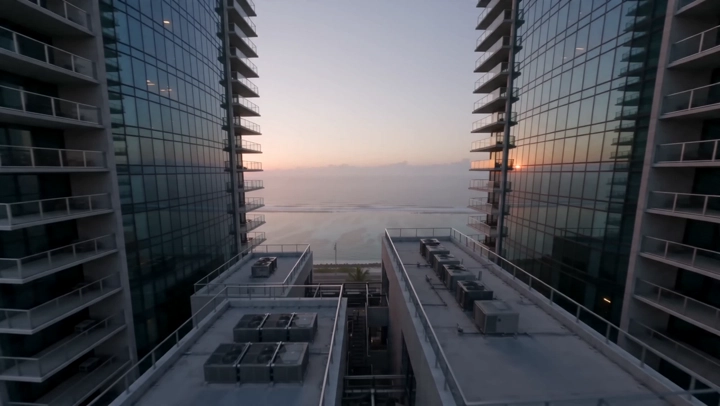
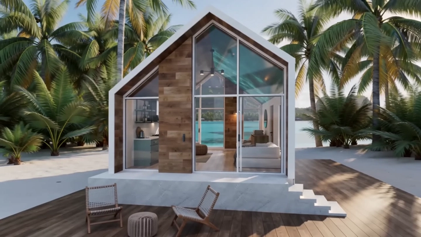
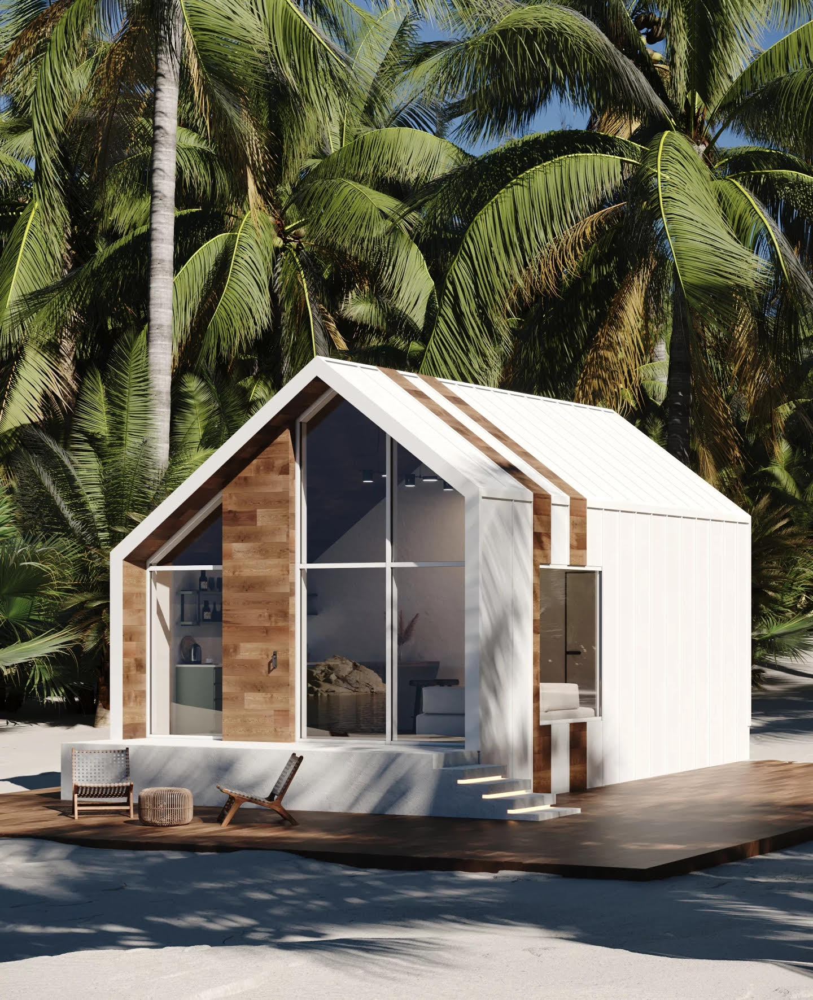

Compact by design
Every square metre carries light, storage, movement, or view.

Okno Spatial Retreat · V4
Move through the layers—from city glass to island water, from shelter to horizon.
Explore the lightOne home · Seven atmospheres
Select a light state and let the island turn around you.

04 / 07 From within
Exploded view · 01
Okno keeps the architecture precise so the experience can stay elemental: shelter, warmth, light, and the world beyond the glass.

Every square metre carries light, storage, movement, or view.
A clear platform lets the landscape continue beneath and around the home.
The glazed gable turns changing sky into the largest room in the house.
Set your coordinates
Tell us the landscape. We’ll help shape the frame.